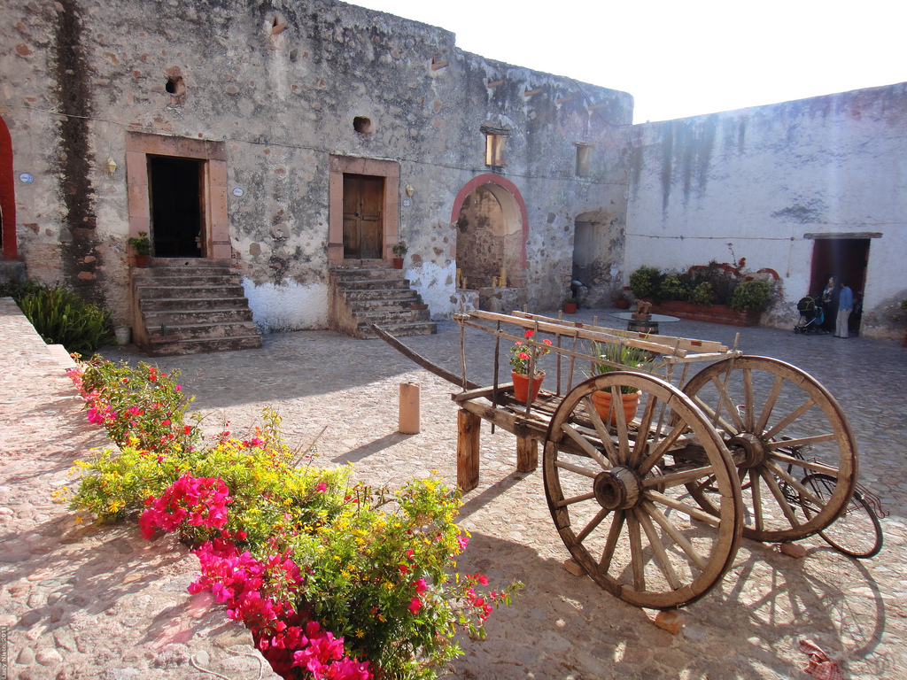
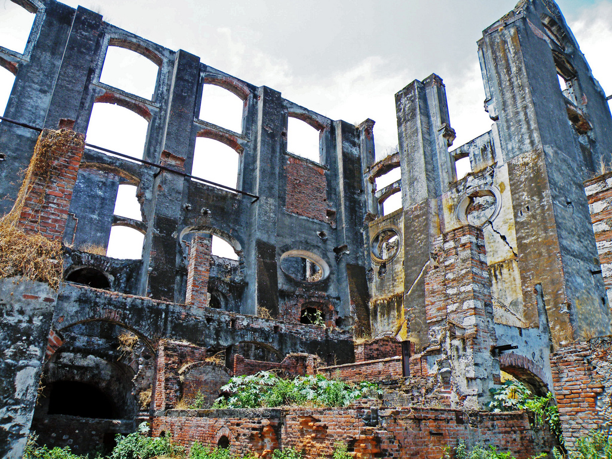
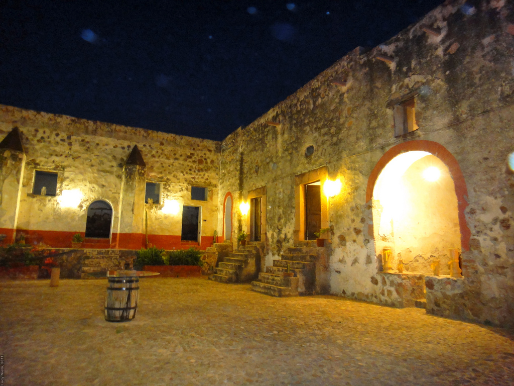
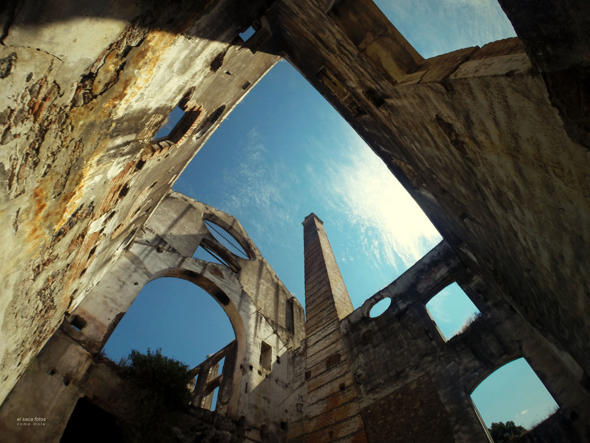
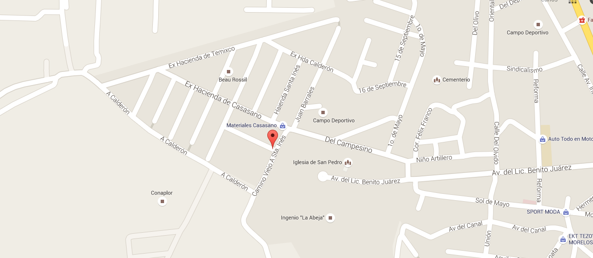

<!DOCTYPE html>
<html lang="es"></html>
<head>
  <meta charset="UTF-8"/>
  <title>Ex-hacienda</title>
  <link rel="stylesheet" href="css/normalize.css"/>
  <link rel="stylesheet" href="https://fonts.googleapis.com/css?family=Lobster"/>
  <link rel="stylesheet" href="css/estilo.css"/>
</head>
<body>
  <header>
    <aside>
      <nav>
        <ul>
          <li>Inicio</li>
          <li>Historia</li>
          <li>Espacios</li>
          <li>Leyenda</li>
          <li>Ubicación</li>
        </ul>
      </nav>
      <div class="sociales">
        <p class="face"></p>
        <p class="twitter"></p>
        <p class="youtube"></p>
        <p class="instagram"></p>
      </div>
    </aside>
    <div class="inicio">
      <h1>Ex Hacienda Coahuixtla</h1>
      <h2>Paredes que contienen siglos de historia.</h2><a href="#">Saber Mas</a>
    </div>
  </header>
  <section class="historia">
    <div class="texto">
      <h2>Historia</h2>
      <p>La Hacienda de San Antonio Coahuixtla empieza su existencia con la fundación del Trapiche de tracción animal a cargo de los Frailes Dominicos en el año de 1580. La Orden de Santo Domingo pagó $ 1,185.00 pesos por el ingenio fundado en los terrenos de los habitantes de Anenecuilco.</p><a href="#">Conoce Mas</a>
    </div>
  </section>
  <section class="espacios">
    <h2>Espacios</h2>
    <p>Una vez en el interior del Casco de la Hacienda se pueden apreciar cinco diferentes zonas que conforman la Hacienda.El Ingenio, La Casa Grande, La Fábrica de Aguardiente y Tienda de raya, Los Talleres, Establos, Caballerizas y Macheros.</p><a href="#">Conocer los espacios</a>
    <article></article>
  </section>
  <section class="leyenda">
    <h2>Leyendas</h2>
    <p>La colosal Hacienda de Coahuixtla también es cuna de leyendas, como la del “Hijo del Diablo”, que tiene más de 100 años de antigüedad. La historia entre los lugareños relata que si tienes mala suerte, puede aparecer han te ti, el “Choco”, un bebé nacido fruto de una violación</p>
    <p class="iconDiablo"></p><a href="#">Toda la leyenda</a>
  </section>
  <section class="ubicacion"></section>
  <footer>
    <h2>Derechos Reservados Copyright &copy</h2>
  </footer>
</body>